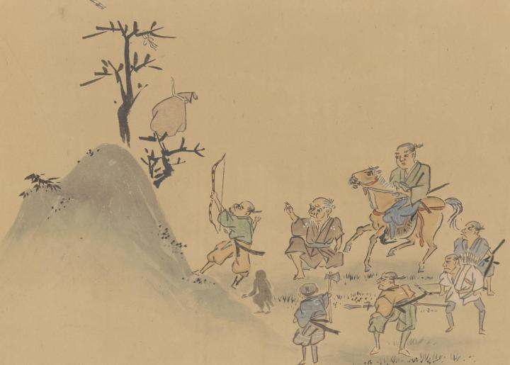

猿たちは、娘を藤袋に入れて枝に吊し、一匹の猿に見張りをさせて出かけた。老夫婦は、通りがかった狩人に藤袋に閉じ込められた娘を助けてほしいとお願いし、狩人が藤袋を弓矢で落とす。
出典：親書誌：U426_nichibunken_0365：藤袋の草子；フジブクロ ノ ソウシ／日付：2014／資源識別子：U426_nichibunken_0365_0003_0000
Copyright (c)2010- International Research Center for Japanese Studies, Kyoto, Japan. All rights reserved.